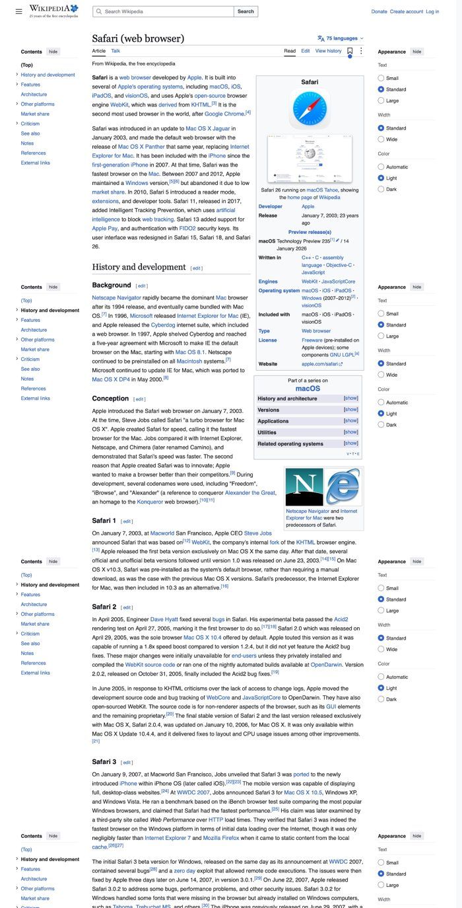

Claude in Safari
A Safari Web Extension plus a local MCP server that lets Claude — or any MCP client — work in your real Safari, the way "Claude in Chrome" works in Chrome.
Расширение Safari и локальный MCP-сервер: Claude (или любой MCP-клиент) работает в вашем настоящем Safari — так же, как «Claude in Chrome» в Chrome.
Unofficial project. Not affiliated with or endorsed by Anthropic. The extension gives an MCP client control of your real Safari sessions — enable it only if you understand that.Неофициальный проект. Не связан с Anthropic. Расширение даёт MCP-клиенту управление вашими настоящими сессиями Safari — включайте, только если понимаете это.

What it can do
Что умеет
Tabs · Вкладки
list, open, close, navigate, history, frames
list, open, close, navigate, history, frames
Read · Чтение
interactive elements with refs, page text, shadow DOM, iframes (cross-origin too)
interactive elements with refs, page text, shadow DOM, iframes (cross-origin too)
Act · Действия
click, double/right click, hover, type, keys, forms, scroll, wait
click, double/right click, hover, type, keys, forms, scroll, wait
See · Зрение
screenshots, full-page screenshot, on-device OCR (Apple Vision, ru+en)
screenshots, full-page screenshot, on-device OCR (Apple Vision, ru+en)
Debug · Отладка
console, fetch/XHR log, JavaScript in the extension or page world
console, fetch/XHR log, JavaScript in the extension or page world
Private · Приватно
everything on 127.0.0.1; Origin + token protect the port
everything on 127.0.0.1; Origin + token protect the port

Install
Установка
- Download
Claude-in-Safari.dmgfrom Releases, drag the app to Applications and open it once. - Safari → Settings → Extensions: enable Claude in Safari, allow all websites. The app has no paid certificate: sign it with your own free Apple Development certificate (a guided script is in the disk image) or use Develop → Allow Unsigned Extensions (repeat after each Safari restart).
- Copy the
serverfolder somewhere permanent and add it toclaude_desktop_config.json, then restart Claude Desktop.
- Скачайте
Claude-in-Safari.dmgиз Releases, перетащите приложение в «Программы» и откройте один раз. - Safari → Настройки → Расширения: включите Claude in Safari, разрешите все сайты. Платного сертификата у приложения нет: подпишите его своим бесплатным сертификатом Apple Development (в образе есть скрипт с подсказками) или используйте «Разработка → Разрешить неподписанные расширения» (после каждого перезапуска Safari).
- Скопируйте папку
serverв постоянное место и добавьте вclaude_desktop_config.json, затем перезапустите Claude Desktop.
{
"mcpServers": {
"Claude in Safari": {
"command": "/opt/homebrew/bin/node",
"args": ["/path/to/server/server.js"]
}
}
}